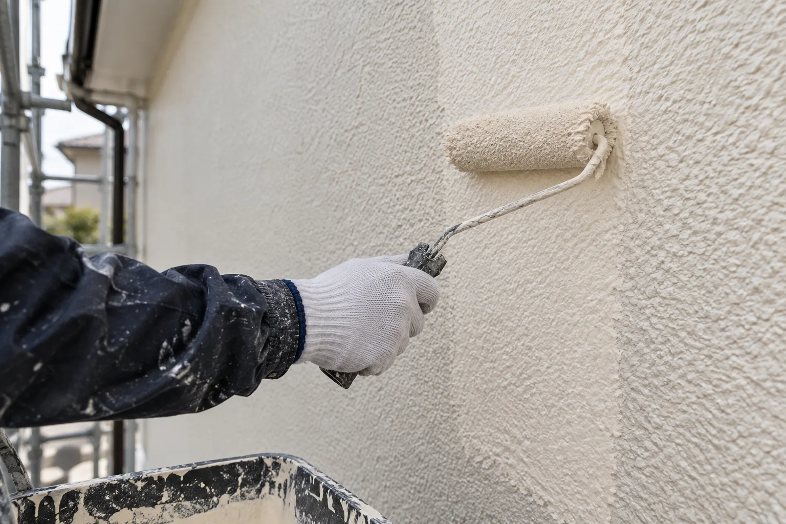

はじめての塗り替え
見た目だけでなく、下地の状態や費用の内訳も。一緒に確かめたいことがあります。
気になったときが、
相談のきっかけ。
当てはまる項目を選ぶと、相談時に伝える内容を整理できます。工事の必要性を診断するものではありません。

塗る前に、
知っておきたいこと。
外壁塗装は、色を変えるだけの工事ではありません。素材や下地の状態によって、必要な手入れも変わります。
- 外壁の状態汚れ・ひび・塗膜の状態
- 工事の範囲屋根・目地・付帯部の対応可否
- 見積もりの条件足場・下地処理・塗料・諸経費
上記は一般的な相談テーマです。実際の対応範囲・工法・費用は個別にご確認ください。
相談から工事まで、
確認を重ねて。
一般的な流れのご紹介です。実際の日程・調査費用・保証条件は会社ごとに異なります。
状況を伝える
気になる場所と時期、希望する工事を伝えます。
調査を相談する
調べる範囲、方法、費用の有無を確認します。
見積もりを比べる
材料・工事範囲・追加費用の条件を整理します。
工事と、その後
日程・近隣への配慮・保証の内容を確認します。
塗り替え前の、
よくある疑問。
わからないことは、決める前にひとつずつ。相談時に確認したいポイントをまとめました。
見積もりは、何を比較すればよいですか？
施工範囲、下地処理、塗料、足場、諸経費、税込・税別など、同じ条件で比較しましょう。追加費用の条件や保証の範囲も確認すると安心です。
調査や見積もりに費用はかかりますか？
会社や調査内容によって異なります。依頼前に費用の有無とキャンセル条件をご確認ください。このサンプルでは無料対応をお約束していません。
色は小さな見本だけで決めても大丈夫ですか？
面積や光の当たり方で印象が変わります。大きめの色見本を屋外で確認し、屋根・窓枠・周囲の景観との組合せも相談しましょう。
屋根や防水も一緒に相談できますか？
対応する工事や施工できる素材は会社によって異なります。建物の状態と希望する工事を伝え、対応可否を個別にご確認ください。